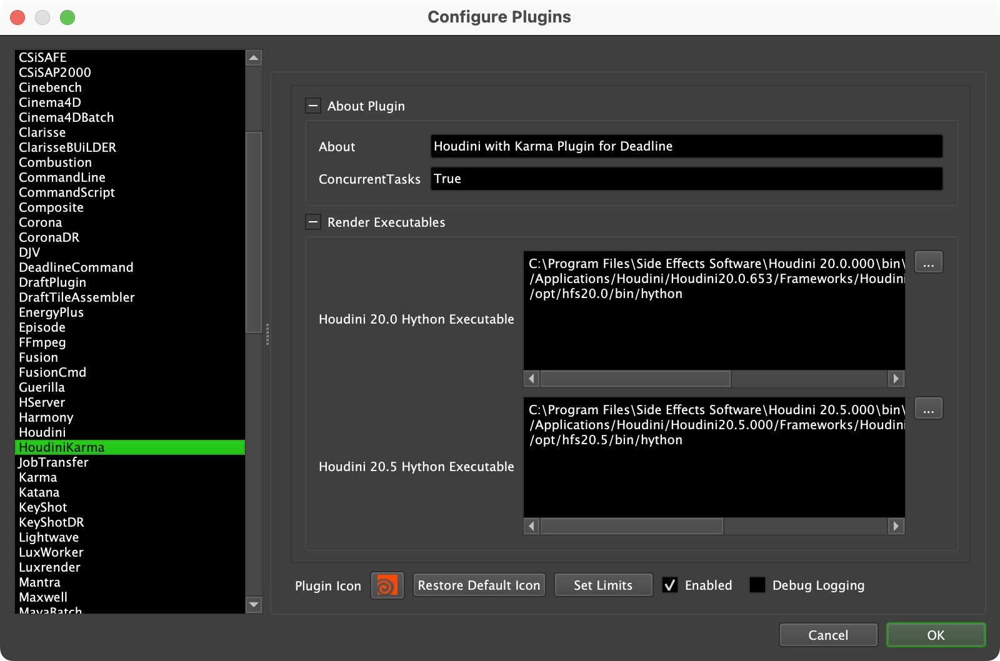

Houdini Karma¶
Job Submission¶
You can submit Houdini Karma jobs from the Monitor.
The Deadline ROP in Houdini and the integrated Deadline submission script for Houdini have not been explicitly configured to support Karma renders/export workflows.
Submission Options¶
The general Deadline options are explained in the Job Submission documentation, and the Draft/Integration options are explained in the Draft and Integration documentation. The following Houdini specific options are used when submitting with the Monitor submitter:
Render Node: The ROP to render with.
Ignore Inputs: If enabled, only the selected ROP will be rendered. No dependencies will rendered.
Build to Force: Force 32 or 64 bit rendering.
Troubleshooting Render Issues¶
The troubleshooting guide does not handle some differences specific to Houdini rendering, this guide will focus on the specifics related to how Deadline runs Houdini renders.
To start we’ll need the error report, as that has the command we’ll need as well as the name of the render node we’ll be testing on. It’s important to test on the same render node that had the error. This way if the issue is related to the configuration of the individual render node we’ll be testing for it. You can find the name of the render node at the end of the task report on the line with “Worker Name:”.
Search that log for a line that contains the phrase “Full Command”, here is one taken right out of a task report:
2024-10-02 16:38:16: 0: INFO: Full Command: "C:\Program Files\Side Effects Software\Houdini 20.0.000\bin\Hython.exe" "C:\ProgramData\Thinkbox\Deadline10\workers\render_node1\plugins\60ccf1c4fe540a0470ff804c\hrender_dl.py" -f 1 1 1 -o "Z:/assets/farm_test.$F4.exr" -g -d /stage/lopnet1/usdrender_rop1 -tempdir "C:\ProgramData\Thinkbox\Deadline10\workers\render_node1\jobsData\60ccf1c4fe540a0470ff804c\0_tempzdETq0" -arnoldAbortOnLicenseFail 1 "C:/ProgramData/Thinkbox/Deadline10/workers/render_node1/jobsData/60ccf1c4fe540a0470ff804c/my_test_scene.hip"
Now strip the timestamp, and everything that isn’t the actual command:
"C:\Program Files\Side Effects Software\Houdini 20.0.000\bin\Hython.exe" "C:\ProgramData\Thinkbox\Deadline10\workers\render_node1\plugins\60ccf1c4fe540a0470ff804c\hrender_dl.py" -f 1 1 1 -o "Z:/assets/farm_test.$F4.exr" -g -d /stage/lopnet1/usdrender_rop1 -tempdir "C:\ProgramData\Thinkbox\Deadline10\workers\render_node1\jobsData\60ccf1c4fe540a0470ff804c\0_tempzdETq0" -arnoldAbortOnLicenseFail 1 "C:/ProgramData/Thinkbox/Deadline10/workers/render_node1/jobsData/60ccf1c4fe540a0470ff804c/my_test_scene.hip"
The next issue is that this command references a couple files in temporary locations that are more than likely gone at this point or have been copied to the render node by the Worker.
First we need the script that we pass to Houdini called hrender_dl.py. This is in DeadlineRepository10/plugins/HoudiniKarma. Copy it to the render node where it’ll be easy to reference. In this example we copy it to the Windows desktop of the user the Worker runs under, named ‘render’.
Second we need the path to the .hip file. You likely don’t need to move the file as it should be readable from where it is for rendering anyways. The exception is if the job was submitted with ‘Submit Houdini Scene’, in which case the path will be to a temporary location and will need to be copied to the render node.
Third we need to provide a temporary directory for rendering, the desktop will do for us here.
With those, our new command looks like this:
"C:\Program Files\Side Effects Software\Houdini 19.5.493\bin\Hython.exe" "C:\Users\render\Desktop\hrender_dl.py" -f 1 1 1 -o "Z:/assets/farm_test.$F4.exr" -g -d /stage/lopnet1/usdrender_rop1 -tempdir "C:\Users\render\Desktop\" -arnoldAbortOnLicenseFail 1 "Z:/projects/my_test_scene.hip"
The next step is to actually run the command from the Command Prompt, Terminal or Shell as applicable to your operating system.
There are steps you can take now that you’ve run the render externally. In some cases Houdini render errors are multiple lines long and this test will show all lines of the error where Deadline would have cancelled the task before everything was printed.
If the render still fails, then the issue would be either in the scene or in the render node itself. Try testing with a simpler scene, or on a different render node to identify which of the two is the issue.
USD Exporting and Karma Standalone¶
The Houdini Karma submitter allows you to submit a job that will export the scene to USD files, and then submit a dependent Karma Standalone job to render the exported USD files.
To enable this flow, the submitted Houdini scene must contain a USD ROP in order to export USD files. This ROP defines the USD file export options.
When submitting from the Monitor, enable the Override Export USD option and specify the USD ROP as the Render Node.
The general Deadline options for the Karma Standalone job are explained in the Job Submission documentation. The Karma Standalone specific options are:
Karma Threads: The number of threads to use for the Karma standalone job.
Plugin Configuration¶
You can configure the Houdini Karma plugin settings from the Monitor. While in power user mode, select Tools -> Configure Plugins and select the Houdini plugin from the list on the left.
Note, if the executable supports a MAJOR.MINOR.REVISION (9.0.123) numbering system in its path, then you will need to configure the explicit exe path to the particular revision that you have installed on your machines. Deadline does not track every possible revision available or indeed where it might be custom installed to, so a studio should verify their exe paths are correct for each application version they choose to use with Deadline. Multiple exe paths can still be declared and the first one that is found on a particular Worker on a particular platform will be used from the exe list.
Render Executables
Hython Executable: The path to the hython executable. It can be found in the Houdini bin folder. Enter alternative paths on separate lines. Different executable paths can be configured for each version installed on your render nodes.
Licensing Options
Workers To Use Escape License: A list of Workers that should use a Houdini Escape license instead of a Batch license. Use a , to separate multiple Worker names, for example: worker001,worker002,worker003
FAQ¶
Which versions of Houdini Karma are supported by Deadline?
Houdini Karma 20.0 and later is supported.
Which Houdini license(s) are required to render with Deadline?
Deadline uses Hython to render, which uses hbatch licenses. If those are not available, it will try to use a Master License instead.
Are HQueue Simulation nodes supported?
Currently there is no explicit Karma integration with HQueue Simulation nodes.
Does Path Mapping work in Houdini Karma?
No. Path mapping for USD files must be handled using Output Resolvers in the Houdini scene nodes. Please refer to Houdini USD documentation for more information. Avoid using absolute USD file paths, use relative path references instead. Use forward slashes in the paths even on Windows.
Error Messages and Meanings¶
This is a collection of known Houdini error messages and their meanings, as well as possible solutions. We want to keep this list as up to date as possible, so if you run into an error message that isn’t listed here, please email Deadline Support and let us know.
Currently, no error messages have been reported for this plugin.

{kind=link}
{kind=link}
{kind=link}